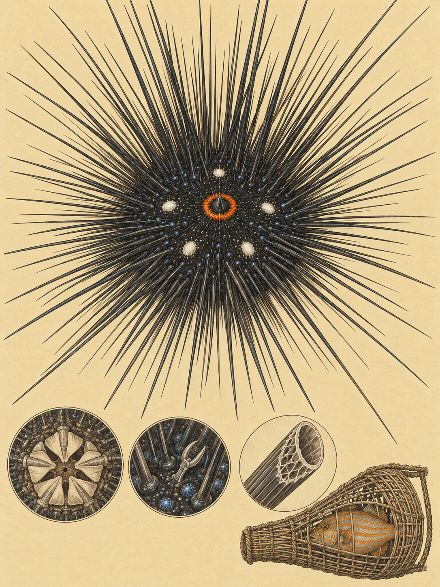

KÜSTE MOMBASA
Diadema setosum
Swahili: „Ufuma“; Giriama: „Ufuma macho“

Bei der Dämmerung öffnet sich zwischen den Korallen ein schwarzer Kreis mit einem orangefarbenen Ring. Darum stehen lange, feine Stacheln, die jede Bewegung im Wasser zu spüren scheinen. Der Diademseeigel sieht nicht wie ein Tier mit Gesicht aus. Fünf leuchtend weiße Flecken liegen auf seiner Oberseite, und in der Mitte sitzt die von einem orangen oder roten Ring umgebene Analöffnung. An Kenias Küste kann Diadema setosum in Korallenriffen, sandigen Lagunen, Felsflächen und Seegraswiesen leben. Tagsüber versteckt er sich, bei Dämmerung beginnt er zu weiden. Seine Geschichte ist die Geschichte eines Riffs, in dem ein Fisch fehlt und ein kleiner Pflanzenfresser plötzlich sehr viel bewirken kann.
1778 beschrieb Nathanael Gottfried Leske die Art zuerst als Echinometra setosa. Später wechselte sie in die Gattung Diadema. Dieser Name kommt aus dem Griechischen und bedeutet Stirnband oder Krone. Das Artepitheton setosum ist lateinischen Ursprungs und bedeutet borstig oder mit Borsten versehen. Beides passt zu dem Tier, dessen Gehäuse durchschnittlich bis 70 Millimeter groß wird und dessen Stacheln bis zu 300 Millimeter lang werden können. An der kenianischen Küste heißt der Seeigel auf Swahili „Ufuma“. Fischer und Riffbeobachter unterscheiden ihn genauer als „Ufuma macho“, Augen-Seeigel. Der Name bezieht sich auf den leuchtenden Ring, der für ein Auge gehalten werden kann. Die fünf weißen Flecken und die blauen Punkte an den Genitalplatten sind weitere Erkennungszeichen.
Unter dem Stachelwald sitzt ein leicht abgeflachtes Gehäuse aus Kalziumkarbonatplatten. Hunderte durchsichtige Saugfüßchen halten das Tier am Untergrund fest, helfen bei der Fortbewegung und dienen der Atmung. Auf der Unterseite liegt die Mundöffnung mit der „Laterne des Aristoteles“, einem Kauapparat aus fünf harten Kalkzähnen. Diese Zähne wachsen ständig nach. Die Stacheln sind hohl, brüchig und mit einem milden Toxin gefüllt. Bei erwachsenen Tieren sind sie in der Regel tiefschwarz, bei jungen Tieren können sie braun gebändert oder vereinzelt weiß sein. Das Tier wiegt als geschlechtsreifes Individuum 35 bis 80 Gramm. Wenn es stark gestört wird, kann es sich auf die Spitzen seiner Stacheln umdrehen und sich so über den Untergrund bewegen.
In einem intakten Riff wird der Diademseeigel von Raubfischen begrenzt. Eine Schlüsselart ist der Orangestreifen-Drückerfisch Balistapus undulatus. Er spuckt einen Wasserstrahl auf den Seeigel, dreht ihn auf den Rücken und greift die ungeschützte Mundseite an. Auch große Lippfische und andere Drückerfische fressen ihn. Wo jedoch handwerkliche Fischer mit geflochtenen Bodenreusen arbeiten, die lokal „Dema“ heißen, werden Riff-Raubfische unselektiv entnommen. Fehlen die Drückerfische, fällt der Fraßdruck fast vollständig weg. In geschützten Riffen bleiben die Seeigel selten, auf stark befischten Riffen werden sie zahlreich. Aus dem Verlust eines Fisches wird so ein Problem für den ganzen Riffkörper.
Wo Schutzmaßnahmen erst kürzlich eingerichtet wurden, liegt die Seeigeldichte zwischen den beiden Extremen. Die verwandten Arten Diadema setosum und Diadema savignyi können dort in gemischten Gruppen vorkommen. Diadema savignyi ist die bessere Konkurrentin um kleine, geschützte Spalten. Diadema setosum behauptet sich dagegen auf offenen Riffdächern und Sandflächen. So entscheidet nicht nur die Zahl der Raubfische, sondern auch die Form des Untergrunds darüber, wo die Tiere sitzen und wie stark sie das Riff abweiden.
Nun wird aus dem einzelnen Seeigel eine geologische Kraft. Diadema setosum frisst Algenrasen, Makroalgen und Fadenalgen auf abgestorbenen Korallenblöcken. Beim Weiden schaben seine fünf Kalkzähne nicht nur Algen ab, sondern auch das Kalziumkarbonat des Riffs. Dieser Vorgang heißt Bioerosion. In einem gesunden System gehört er zur Entstehung von Korallensand und zum normalen Umbau des Riffs. Auf einem überfischten Riff wird er zerstörerisch, weil viele Seeigel gleichzeitig weiden und Riffmaterial abtragen. Übersteigt die Erosion das Wachstum neuer Steinkorallen, verliert das Riff sein Karbonat. Es wird flacher, verliert Schutzwirkung für die Küste und bietet weniger Verstecke für Fische und Wirbellose.
Die Tiere arbeiten vor allem nachts. Tagsüber meiden sie Licht und sammeln sich in Spalten oder unter Korallenüberhängen. Ihre Haut nimmt keine scharfen Bilder auf, aber sie erkennt Helligkeitswechsel, Schatten und die Größe eines näher kommenden Objekts. Ein Schatten lässt die Stacheln wie ein Radar in seine Richtung kippen. Ende September und im Oktober, wenn der Südostmonsun Kusi nachlässt und sich der wärmere Nordostmonsun Kaskazi vorbereitet, beginnt vermutlich eine wichtige Phase der Fortpflanzungsreifung. Bei der Paarung sehen Männchen und Weibchen äußerlich gleich aus. Beide geben ihre Keimzellen synchron in die Wassersäule ab, wo die Befruchtung stattfindet. Die Larven leben zunächst im freien Wasser und siedeln sich später am Riff an. Warmes Wasser und der Vollmond steuern die Laichereignisse. Wenn die Wassertemperatur steigt, reifen die Fortpflanzungsorgane.
Seit 2022 verändert eine weitere Unsicherheit die Geschichte. Ein Massensterben breitete sich bis 2024 vom Golf von Akaba in das Mittelmeer, den Golf von Oman und bis Réunion aus. Als Erreger wurde Philaster apodigitiformis identifiziert. Befallene Seeigel verlieren Saugfüßchen und Stacheln. Ob die Krankheit Kenias Riffe erreicht hat, muss 2026 geprüft werden. Unter Wasser bleibt der orange Ring im ersten Licht der Dämmerung ein stilles Zeichen: Hier raspelt ein kleines Tier am großen Kalkkörper des Riffs.
Für die Menschen an Kenias Küste ist der Diademseeigel vor allem ein Tier, dem man ausweicht. Eine weitreichende traditionelle Nutzung als Nahrung ist bei Giriama oder Swahili nicht belegt. Wer bei Ebbe auf dem Riffdach arbeitet oder am Bamburi Beach schwimmt, kann sich an den spröden Stacheln verletzen. Sie brechen leicht ab, dringen tief in die Haut ein und setzen ein mildes Toxin frei. Das verursacht Schwellungen und starke Schmerzen.
Der Name „Ufuma macho“, Augen-Seeigel, zeigt zugleich genaue Naturbeobachtung. Global ist die Art auf der Roten Liste nicht bewertet. Einen eigenen rechtlichen Schutz gibt es in Kenia nicht. Innerhalb des Mombasa Marine National Park sind Tiere und Lebensräume vollständig geschützt. Außerhalb bestimmen Fischerei und Müllbelastung die Bedingungen. Für das Riff ist der Schutz der Raubfische entscheidend, weil ihre Rückkehr die Zahl der Seeigel und damit die Stärke der Bioerosion begrenzen kann. Das macht die Begegnung mit den Stacheln auch zu einer Frage des Riffschutzes.
Wo und wann: Im Mombasa Marine National Park wartet man bei später Dämmerung oder vor Sonnenaufgang an einem Riff. Dann verlassen die Seeigel ihre Spalten und verteilen sich zur Nahrungssuche. Am Bamburi Beach zeigt ein ungeschütztes Riff den Gegensatz zu geschützten Flächen. Ein Schatten kann die Stacheln zur Kamera drehen.
Brennweite: 45 mm unter Wasser für den orangefarbenen Ring, die fünf weißen Punkte und die blauen Schimmer an den Stachelbasen. 26 bis 60 mm eignet sich, um die Seeigeldichte und das flache Riff gemeinsam zu zeigen.
Bild-Idee: Der orange Ring leuchtet zwischen schwarzen Stacheln, darunter liegen abgeweidete Korallenblöcke und feiner Korallensand.